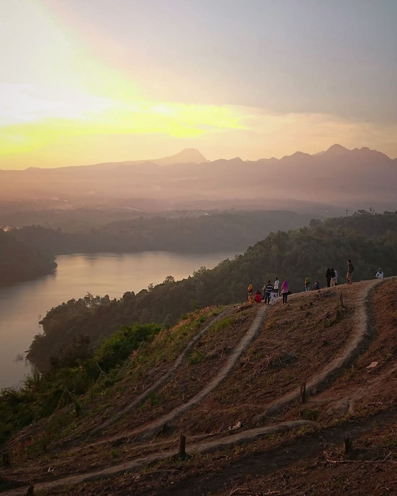

Bukit Puseran

Bukit Puseran
Bukit Puseran
Bukit Sepuser
Bukit Puteran

Air Terjun Kali Banteng
Monthel

Air Terjun Kedung Gender

Air Terjun Kedung Gerimis

Air Terjun Kedung Paso
Puncak 29
Puncak Argopiloso

Puncak Natas Angin